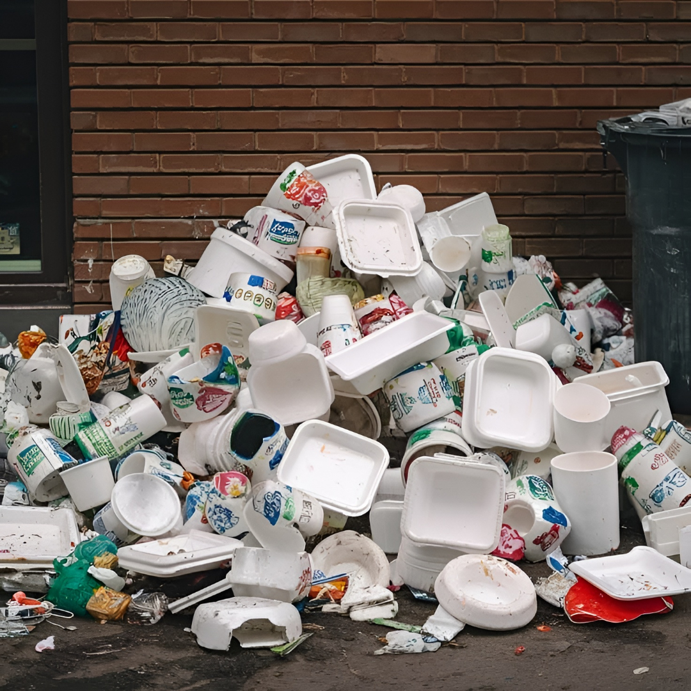

Memahami sampah
Sampah adalah sisa kegiatan sehari-hari manusia atau proses alam yang berbentuk padat. Di Indonesia, pengertian dan kewajiban pengelolaannya diatur dalam Undang-Undang Nomor 18 Tahun 2008 tentang Pengelolaan Sampah.
Sampah muncul di setiap tahap: produksi, distribusi, dan konsumsi. Memahami asalnya penting, sebab pengurangan paling efektif dilakukan sebelum sesuatu menjadi sampah.
Sumber rujukan: UU No. 18 Tahun 2008; SIPSN, Kementerian Lingkungan Hidup (sipsn.kemenlh.go.id)